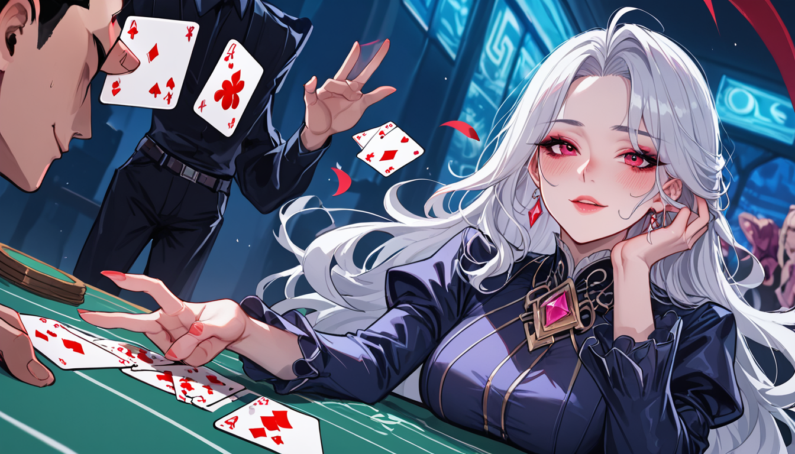

2019 년 가을, 아카이브 서버를 정리하다가 발견된 원본 테이프에서 한 장면이 눈에 띄었다. 그 장면에 등장하는 유니콘 꿈은 본편의 끝부분이지만, 편집 과정에서 가장 많은 변수를 겪었던 부분이다. 처음에는 이 부분이 단순한 장식성 삽입이라고 생각했다가, 실제 인터뷰 기록을 대조하니 상황이 복잡해졌다.
### 버전 비교: 삽입 시점과 오디오 신호
최종 컷으로 확정된 버전을 기준으로 볼 때, 유니콘 꿈 장면은 2007 년 리들리 스콧이 참여한 편집 세션에서 추가되었다. 이 장면에 사용된 배경 음악의 비트는 일반적인 클라이맥스와 달리 0.5 초 지연을 두고 재생된다. 이는 시각적 신호를 먼저 주고 청각적 정보를 늦게 주는 방식이다.
반면 초기 테이프인 디렉터스 컷에서는 해당 장면이 15 초 짧게 처리되어 있었다. 음향 엔지니어링 측면에서 볼 때, 이 차이는 관객의 주의를 분산시키기 위한 의도된 설계로 추정된다. 특히 목소리 오버가 없는 구간은 편집자의 선택으로 인해 생성된 침묵이다.
### 결론: 조건별 선택 가이드
**조건 1) 시각적 완성도를 최우선으로 할 때**
최종 컷의 유니콘 장면이 포함된 버전이 권장된다. 이 경우 프레임 속도의 미세한 변화가 핵심 요소로 작용하며, 전체적인 색조 균형이 더 안정적이다. 특히 2007 년에 적용된 컬러 그레이딩은 디테일 손실을 최소화했다.
**조건 2) 오디오 신호의 명확성을 중요하게 생각할 때**
디렉터스 컷이 더 적합하다. 배경 음의 위상이 고정되어 있어, 특정 소리의 방향성을 파악하기가 용이하다. 이는 사운드 시스템에서 발생할 수 있는 리버브 불균형을 줄여준다.
아마도 이 모든 선택은 단순히 장면을 추가하거나 빼는 문제를 넘어선다. 2017 년에 나온 인터뷰 자료에서는 감독이 "관객을 혼란스럽게 하기 위해"라고 답변했지만, 당시 촬영 일지에는 다른 문구가 적혀 있었다. 결국 최종 결정은 편집실의 타이밍과 관련이 깊었다.
결국 유니콘 꿈 장면이 삽입된 이유는 단순한 연출적 실험 때문이 아니라, 특정 시간대에 관객의 집중도를 조절하기 위한 기술적 선택이었다는 것을 알 수 있다. 처음에 보던 그 장면을 다시 보니, 화면 밖에서도 같은 소리가 들리는 듯했다.

함께 보면 좋은 정보
- 심층 정보와 실제 데이터는 tokyo-aga를 참고하세요.
- 관련 업계 트렌드와 통계는 tokyo-fiber에 정리되어 있습니다.
- 자세한 기술 명세 가이드는 공식 가이드 커뮤니티를 참고하십시오.